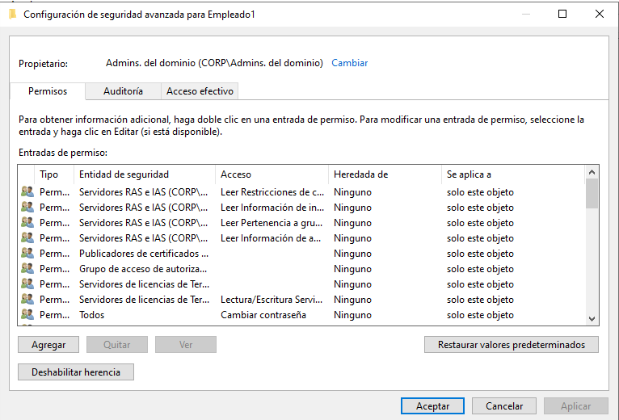
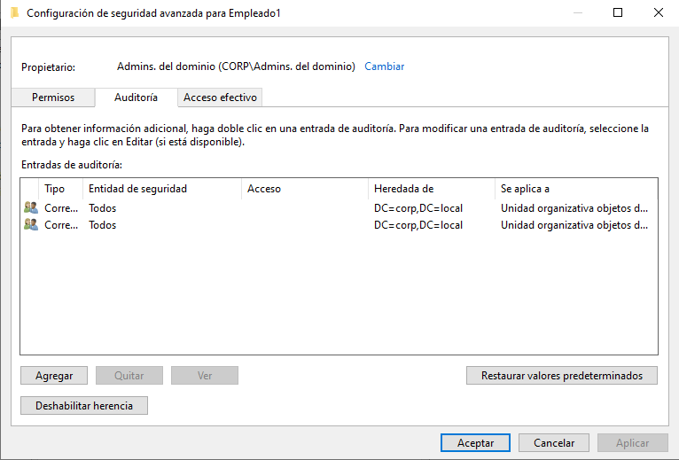
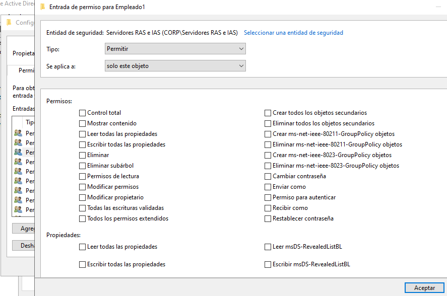
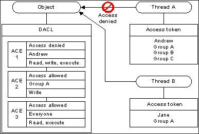

¿EN QUÉ CONSISTEN LAS DACLs Y SACLs?
Consiste en una estructura llamada Security Descriptor y la información de seguridad asociada que consiste en:
Todos los objetos que tiene un sistema windows tienen asociado un descriptor de seguridad, por ejemplo:

Usuarios o grupos que tienen ciertos permisos sobre este objeto “empleado1”

Registros de auditoria o trazas que quedan cuando se provocan ciertos accesos.
Esto es interesante por lo siguiente:

Si hacemos click en un access entry ACE vemos que tipo de privilegios tiene un usuario o grupo sobre el objeto en cuestión y estos pueden ser muchos como por ejemplo cambiar la contraseña por lo que tenemos un usuario o grupo comprometido que puede modificar la contraseña de otro, ya no es necesario comprometer la contraseña de ese usuario objetivo sino que simplemente podremos modificar su acceso y loggear en su nombre con una contraseña restablecida.
En la gran mayoría de los archivos, directorios, elementos de windows encontramos esos security descriptors DACL y SACL que indican que permisos tienen que usuarios, grupos, etc sobre ese objeto y que trazas de acceso quedan registradas.
https://learn.microsoft.com/en-us/windows/win32/secauthz/dacls-and-aces
Como comprueba el sistema windows la DACL cuando se trata de acceder a un objeto, por lo que sencillamente si se intenta acceder a un objeto, windows comprueba la DACL relacionada a ese objeto y comprueba el ACCESS TOKEN para verificar si el usuario que a realizado la petición tiene estos permisos o no.
